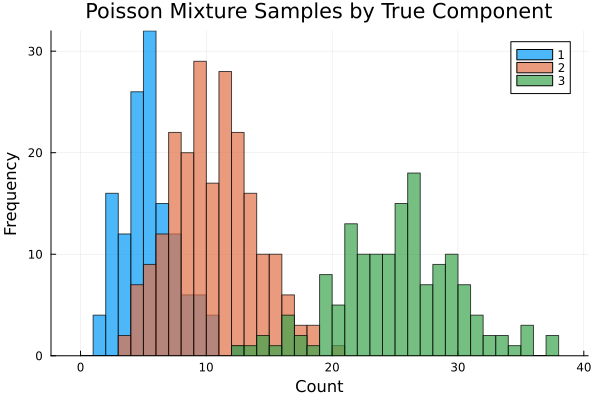
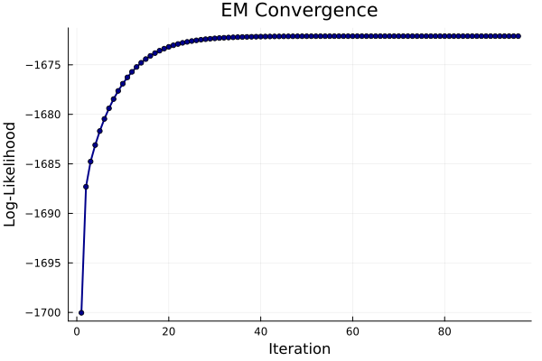
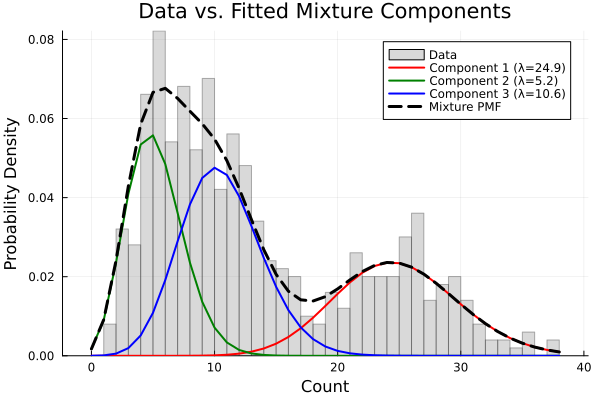

Simulating and Fitting a Poisson Mixture Model
This tutorial demonstrates how to build and fit a Poisson Mixture Model (PMM) with StateSpaceDynamics.jl using the Expectation-Maximization (EM) algorithm. We'll cover simulation, fitting, diagnostics, interpretation, and practical considerations.
What is a Poisson Mixture Model?
A PMM assumes each observation $x_i \in \{0,1,2,\ldots\}$ is drawn from one of $k$ Poisson distributions with rates $\lambda_1,\ldots,\lambda_k$. The component assignment is a latent categorical variable $z_i \in \{1,\ldots,k\}$ with mixing weights $\pi_1,\ldots,\pi_k$ where $\sum_j \pi_j = 1$.
Generative process:
- Draw $z_i \sim \text{Categorical}(\boldsymbol{\pi})$
- Given $z_i = j$, draw $x_i \sim \text{Poisson}(\lambda_j)$
PMMs are useful for count data from heterogeneous sub-populations (e.g., spike counts from different neuron types, customer transaction counts from different segments, or event frequencies across different regimes).
EM Algorithm Overview
EM maximizes the marginal log-likelihood $\log p(\mathbf{x} | \boldsymbol{\pi}, \boldsymbol{\lambda})$ by iterating:
- E-step: Compute responsibilities $\gamma_{ij} = P(z_i = j | x_i, \boldsymbol{\theta})$
- M-step: Update parameters to maximize expected complete-data log-likelihood
For Poisson mixtures, the M-step has closed-form updates: $\pi_j \leftarrow \frac{1}{n} \sum_i \gamma_{ij}, \quad \lambda_j \leftarrow \frac{\sum_i \gamma_{ij} x_i}{\sum_i \gamma_{ij}}$
Load Required Packages
using StateSpaceDynamics
using LinearAlgebra
using Random
using Plots
using StableRNGs
using StatsPlots
using DistributionsFix RNG for reproducible simulation and k-means seeding
rng = StableRNG(1234);Create True Poisson Mixture Model
We'll simulate from a mixture of $k=3$ Poisson components with distinct rates and mixing weights. These parameters create well-separated components that should be recoverable by EM.
k = 3
true_λs = [5.0, 10.0, 25.0] # Poisson rates per component
true_πs = [0.25, 0.45, 0.30] # Mixing weights (sum to 1)
true_pmm = PoissonMixtureModel(k, true_λs, true_πs);
print("True model: k=$k components\n")
for i in 1:k
print("Component $i: λ=$(true_λs[i]), π=$(true_πs[i])\n")
endTrue model: k=3 components
Component 1: λ=5.0, π=0.25
Component 2: λ=10.0, π=0.45
Component 3: λ=25.0, π=0.3Generate Synthetic Data
Draw $n$ independent samples. The labels indicate true component membership for each observation (unknown in practice and must be inferred).
n = 500
labels = rand(rng, Categorical(true_πs), n)
data = [rand(rng, Poisson(true_λs[labels[i]])) for i in 1:n];
print("Generated $n samples with count range [$(minimum(data)), $(maximum(data))]\n");Generated 500 samples with count range [1, 38]Visualize samples by true component membership Components with larger $\lambda$ shift mass toward higher counts
p1 = histogram(data;
group=labels,
bins=0:1:maximum(data),
bar_position=:dodge,
xlabel="Count", ylabel="Frequency",
title="Poisson Mixture Samples by True Component",
alpha=0.7, legend=:topright
)
Fit Poisson Mixture Model with EM
Construct model with $k$ components and fit using EM algorithm. Key options:
maxiter: Maximum EM iterationstol: Convergence tolerance (relative log-likelihood improvement)initialize_kmeans=true: Use k-means for stable initialization
fit_pmm = PoissonMixtureModel(k)
_, lls = fit!(fit_pmm, data; maxiter=100, tol=1e-6, initialize_kmeans=true);
print("EM converged in $(length(lls)) iterations\n")
print("Log-likelihood improved by $(round(lls[end] - lls[1], digits=1))\n");Iteration 1: Log-likelihood = -1700.0405774871415
Iteration 2: Log-likelihood = -1687.310450969604
Iteration 3: Log-likelihood = -1684.7658656490235
Iteration 4: Log-likelihood = -1683.1021761234383
Iteration 5: Log-likelihood = -1681.6868529865947
Iteration 6: Log-likelihood = -1680.461483972427
Iteration 7: Log-likelihood = -1679.393390737799
Iteration 8: Log-likelihood = -1678.4568553476488
Iteration 9: Log-likelihood = -1677.6328604044581
Iteration 10: Log-likelihood = -1676.9073557428048
Iteration 11: Log-likelihood = -1676.269337632402
Iteration 12: Log-likelihood = -1675.7095237186256
Iteration 13: Log-likelihood = -1675.21964243749
Iteration 14: Log-likelihood = -1674.7921229933636
Iteration 15: Log-likelihood = -1674.419988764086
Iteration 16: Log-likelihood = -1674.0968318362343
Iteration 17: Log-likelihood = -1673.8168081555887
Iteration 18: Log-likelihood = -1673.5746292819367
Iteration 19: Log-likelihood = -1673.3655443667476
Iteration 20: Log-likelihood = -1673.1853129890815
Iteration 21: Log-likelihood = -1673.0301715257597
Iteration 22: Log-likelihood = -1672.8967958074334
Iteration 23: Log-likelihood = -1672.782262288245
Iteration 24: Log-likelihood = -1672.68400935996
Iteration 25: Log-likelihood = -1672.5997999344079
Iteration 26: Log-likelihood = -1672.5276860271956
Iteration 27: Log-likelihood = -1672.4659757849045
Iteration 28: Log-likelihood = -1672.4132031862116
Iteration 29: Log-likelihood = -1672.368100494813
Iteration 30: Log-likelihood = -1672.3295734346732
Iteration 31: Log-likelihood = -1672.2966789845093
Iteration 32: Log-likelihood = -1672.2686056408807
Iteration 33: Log-likelihood = -1672.2446559706848
Iteration 34: Log-likelihood = -1672.2242312599
Iteration 35: Log-likelihood = -1672.2068180616257
Iteration 36: Log-likelihood = -1672.1919764502243
Iteration 37: Log-likelihood = -1672.1793297968395
Iteration 38: Log-likelihood = -1672.1685558932686
Iteration 39: Log-likelihood = -1672.1593792645804
Iteration 40: Log-likelihood = -1672.1515645251475
Iteration 41: Log-likelihood = -1672.1449106468638
Iteration 42: Log-likelihood = -1672.1392460222962
Iteration 43: Log-likelihood = -1672.1344242185403
Iteration 44: Log-likelihood = -1672.1303203296159
Iteration 45: Log-likelihood = -1672.126827846614
Iteration 46: Log-likelihood = -1672.123855974628
Iteration 47: Log-likelihood = -1672.1213273346827
Iteration 48: Log-likelihood = -1672.119175996969
Iteration 49: Log-likelihood = -1672.117345798798
Iteration 50: Log-likelihood = -1672.1157889067576
Iteration 51: Log-likelihood = -1672.1144645885383
Iteration 52: Log-likelihood = -1672.113338164091
Iteration 53: Log-likelihood = -1672.112380110556
Iteration 54: Log-likelihood = -1672.1115652985497
Iteration 55: Log-likelihood = -1672.1108723408001
Iteration 56: Log-likelihood = -1672.1102830368216
Iteration 57: Log-likelihood = -1672.1097818995254
Iteration 58: Log-likelihood = -1672.1093557518761
Iteration 59: Log-likelihood = -1672.1089933831574
Iteration 60: Log-likelihood = -1672.1086852562646
Iteration 61: Log-likelihood = -1672.108423258353
Iteration 62: Log-likelihood = -1672.1082004886048
Iteration 63: Log-likelihood = -1672.1080110774178
Iteration 64: Log-likelihood = -1672.1078500325855
Iteration 65: Log-likelihood = -1672.107713108325
Iteration 66: Log-likelihood = -1672.107596693826
Iteration 67: Log-likelihood = -1672.107497718403
Iteration 68: Log-likelihood = -1672.1074135707852
Iteration 69: Log-likelihood = -1672.1073420304665
Iteration 70: Log-likelihood = -1672.107281209259
Iteration 71: Log-likelihood = -1672.1072295016224
Iteration 72: Log-likelihood = -1672.1071855423932
Iteration 73: Log-likelihood = -1672.1071481707875
Iteration 74: Log-likelihood = -1672.1071163998686
Iteration 75: Log-likelihood = -1672.1070893904862
Iteration 76: Log-likelihood = -1672.107066429181
Iteration 77: Log-likelihood = -1672.1070469093754
Iteration 78: Log-likelihood = -1672.1070303153335
Iteration 79: Log-likelihood = -1672.1070162085987
Iteration 80: Log-likelihood = -1672.1070042163988
Iteration 81: Log-likelihood = -1672.1069940218367
Iteration 82: Log-likelihood = -1672.1069853554638
Iteration 83: Log-likelihood = -1672.1069779882441
Iteration 84: Log-likelihood = -1672.1069717254388
Iteration 85: Log-likelihood = -1672.1069664015063
Iteration 86: Log-likelihood = -1672.1069618757042
Iteration 87: Log-likelihood = -1672.106958028402
Iteration 88: Log-likelihood = -1672.1069547578934
Iteration 89: Log-likelihood = -1672.1069519776872
Iteration 90: Log-likelihood = -1672.1069496143089
Iteration 91: Log-likelihood = -1672.1069476052594
Iteration 92: Log-likelihood = -1672.1069458974212
Iteration 93: Log-likelihood = -1672.1069444456355
Iteration 94: Log-likelihood = -1672.106943211507
Iteration 95: Log-likelihood = -1672.1069421624152
Iteration 96: Log-likelihood = -1672.106941270615
Converged at iteration 96
EM converged in 96 iterations
Log-likelihood improved by 27.9Display learned parameters
print("Learned parameters:\n")
for i in 1:k
print("Component $i: λ=$(round(fit_pmm.λₖ[i], digits=2)), π=$(round(fit_pmm.πₖ[i], digits=3))\n")
endLearned parameters:
Component 1: λ=24.87, π=0.295
Component 2: λ=5.22, π=0.319
Component 3: λ=10.58, π=0.386Monitor EM Convergence
EM guarantees non-decreasing log-likelihood. Monotonic ascent indicates proper convergence.
p2 = plot(lls;
xlabel="Iteration", ylabel="Log-Likelihood",
title="EM Convergence",
marker=:circle, markersize=3, lw=2,
legend=false, color=:darkblue
)
annotate!(p2, length(lls)*0.7, lls[end]*0.98,
text("Final LL: $(round(lls[end], digits=1))", 10))
Visual Model Assessment
Overlay fitted component PMFs and overall mixture PMF on normalized histogram. Components should explain major modes and tail behavior in the data.
p3 = histogram(data;
bins=0:1:maximum(data), normalize=true, alpha=0.3,
xlabel="Count", ylabel="Probability Density",
title="Data vs. Fitted Mixture Components",
label="Data", color=:gray
)
x_range = collect(0:maximum(data))
colors = [:red, :green, :blue]3-element Vector{Symbol}:
:red
:green
:bluePlot individual component PMFs
for i in 1:k
λᵢ = fit_pmm.λₖ[i]
πᵢ = fit_pmm.πₖ[i]
pmf_i = πᵢ .* pdf.(Poisson(λᵢ), x_range)
plot!(p3, x_range, pmf_i;
lw=2, color=colors[i],
label="Component $i (λ=$(round(λᵢ, digits=1)))"
)
endPlot overall mixture PMF
mixture_pmf = reduce(+, (πᵢ .* pdf.(Poisson(λᵢ), x_range)
for (λᵢ, πᵢ) in zip(fit_pmm.λₖ, fit_pmm.πₖ)))
plot!(p3, x_range, mixture_pmf;
lw=3, linestyle=:dash, color=:black,
label="Mixture PMF"
)
Posterior Responsibilities (Soft Clustering)
Responsibilities $\gamma_{ij} = P(z_i = j | x_i, \hat{\boldsymbol{\theta}})$ quantify how likely each observation belongs to each component. These provide soft assignments and uncertainty quantification.
function responsibilities_pmm(λs::AbstractVector, πs::AbstractVector, x::AbstractVector)
k, n = length(λs), length(x)
Γ = zeros(n, k)
for i in 1:n
for j in 1:k
Γ[i, j] = πs[j] * pdf(Poisson(λs[j]), x[i])
end
row_sum = sum(Γ[i, :]) # Normalize to get probabilities
if row_sum > 0
Γ[i, :] ./= row_sum
end
end
return Γ
end
Γ = responsibilities_pmm(fit_pmm.λₖ, fit_pmm.πₖ, data);Hard assignments (if needed) are argmax over responsibilities
hard_labels = [argmax(Γ[i, :]) for i in 1:n];Calculate assignment accuracy compared to true labels
accuracy = mean(labels .== hard_labels)
print("Component assignment accuracy: $(round(accuracy*100, digits=1))%\n");Component assignment accuracy: 12.6%Information Criteria for Model Selection
When $k$ is unknown, compare models using AIC/BIC:
- AIC = $2p - 2\text{LL}$
- BIC = $p \log(n) - 2\text{LL}$
where parameter count $p = (k-1) + k = 2k-1$ (mixing weights + rates)
function compute_ic(lls::AbstractVector, n::Int, k::Int)
ll = last(lls)
p = 2k - 1
return (AIC = 2p - 2ll, BIC = p*log(n) - 2ll)
end
ic = compute_ic(lls, n, k)
print("Information criteria: AIC = $(round(ic.AIC, digits=1)), BIC = $(round(ic.BIC, digits=1))\n");Information criteria: AIC = 3354.2, BIC = 3375.3Parameter Recovery Assessment
print("\n=== Parameter Recovery Assessment ===\n")
λ_errors = [abs(true_λs[i] - fit_pmm.λₖ[i]) / true_λs[i] for i in 1:k]
π_errors = [abs(true_πs[i] - fit_pmm.πₖ[i]) for i in 1:k]
print("Rate recovery errors (%):\n")
for i in 1:k
print("Component $i: $(round(λ_errors[i]*100, digits=1))%\n")
end
print("Mixing weight recovery errors:\n")
for i in 1:k
print("Component $i: $(round(π_errors[i], digits=3))\n")
end
=== Parameter Recovery Assessment ===
Rate recovery errors (%):
Component 1: 397.5%
Component 2: 47.8%
Component 3: 57.7%
Mixing weight recovery errors:
Component 1: 0.045
Component 2: 0.131
Component 3: 0.086Model Selection Example
Demonstrate fitting multiple values of k and comparing via BIC
print("\n=== Model Selection Demo ===\n")
k_range = 1:5
bic_scores = Float64[]
aic_scores = Float64[]
for k_test in k_range
pmm_test = PoissonMixtureModel(k_test)
_, lls_test = fit!(pmm_test, data; maxiter=50, tol=1e-6, initialize_kmeans=true)
ic_test = compute_ic(lls_test, n, k_test)
push!(aic_scores, ic_test.AIC)
push!(bic_scores, ic_test.BIC)
print("k=$k_test: AIC=$(round(ic_test.AIC, digits=1)), BIC=$(round(ic_test.BIC, digits=1))\n")
end
=== Model Selection Demo ===
Iteration 1: Log-likelihood = -2446.0120010620803
Iteration 2: Log-likelihood = -2446.0120010620803
Converged at iteration 2
k=1: AIC=4894.0, BIC=4898.2
Iteration 1: Log-likelihood = -1715.624896141145
Iteration 2: Log-likelihood = -1708.759401343629
Iteration 3: Log-likelihood = -1707.3723906650116
Iteration 4: Log-likelihood = -1707.0535531896148
Iteration 5: Log-likelihood = -1706.9763116272684
Iteration 6: Log-likelihood = -1706.9571343227624
Iteration 7: Log-likelihood = -1706.952315682551
Iteration 8: Log-likelihood = -1706.9510976917484
Iteration 9: Log-likelihood = -1706.9507889067863
Iteration 10: Log-likelihood = -1706.9507105064872
Iteration 11: Log-likelihood = -1706.95069058571
Iteration 12: Log-likelihood = -1706.9506855221139
Iteration 13: Log-likelihood = -1706.9506842347632
Iteration 14: Log-likelihood = -1706.9506839074486
Converged at iteration 14
k=2: AIC=3419.9, BIC=3432.5
Iteration 1: Log-likelihood = -1673.9578131962924
Iteration 2: Log-likelihood = -1672.7853889938904
Iteration 3: Log-likelihood = -1672.4799406936454
Iteration 4: Log-likelihood = -1672.374202690249
Iteration 5: Log-likelihood = -1672.3214599662251
Iteration 6: Log-likelihood = -1672.2859328536954
Iteration 7: Log-likelihood = -1672.2581225423169
Iteration 8: Log-likelihood = -1672.2351135211225
Iteration 9: Log-likelihood = -1672.2157326562576
Iteration 10: Log-likelihood = -1672.1993171092222
Iteration 11: Log-likelihood = -1672.1853896067405
Iteration 12: Log-likelihood = -1672.1735667986286
Iteration 13: Log-likelihood = -1672.1635287781426
Iteration 14: Log-likelihood = -1672.1550053708374
Iteration 15: Log-likelihood = -1672.1477675957026
Iteration 16: Log-likelihood = -1672.1416211912685
Iteration 17: Log-likelihood = -1672.1364013066943
Iteration 18: Log-likelihood = -1672.131968037352
Iteration 19: Log-likelihood = -1672.1282026440083
Iteration 20: Log-likelihood = -1672.1250043458733
Iteration 21: Log-likelihood = -1672.1222875994702
Iteration 22: Log-likelihood = -1672.1199797902273
Iteration 23: Log-likelihood = -1672.1180192741833
Iteration 24: Log-likelihood = -1672.1163537168848
Iteration 25: Log-likelihood = -1672.1149386843465
Iteration 26: Log-likelihood = -1672.1137364477192
Iteration 27: Log-likelihood = -1672.112714969374
Iteration 28: Log-likelihood = -1672.1118470425379
Iteration 29: Log-likelihood = -1672.1111095614658
Iteration 30: Log-likelihood = -1672.1104829020546
Iteration 31: Log-likelihood = -1672.10995039626
Iteration 32: Log-likelihood = -1672.1094978860538
Iteration 33: Log-likelihood = -1672.1091133448037
Iteration 34: Log-likelihood = -1672.1087865559116
Iteration 35: Log-likelihood = -1672.108508840025
Iteration 36: Log-likelihood = -1672.1082728233619
Iteration 37: Log-likelihood = -1672.1080722411332
Iteration 38: Log-likelihood = -1672.1079017705026
Iteration 39: Log-likelihood = -1672.1077568888452
Iteration 40: Log-likelihood = -1672.1076337532456
Iteration 41: Log-likelihood = -1672.1075290983456
Iteration 42: Log-likelihood = -1672.1074401493554
Iteration 43: Log-likelihood = -1672.1073645483884
Iteration 44: Log-likelihood = -1672.1073002916871
Iteration 45: Log-likelihood = -1672.1072456764648
Iteration 46: Log-likelihood = -1672.1071992556194
Iteration 47: Log-likelihood = -1672.107159799365
Iteration 48: Log-likelihood = -1672.1071262625214
Iteration 49: Log-likelihood = -1672.1070977568158
Iteration 50: Log-likelihood = -1672.1070735273386
k=3: AIC=3354.2, BIC=3375.3
Iteration 1: Log-likelihood = -1684.2992007056512
Iteration 2: Log-likelihood = -1680.4890655808915
Iteration 3: Log-likelihood = -1677.878276733052
Iteration 4: Log-likelihood = -1676.1207574888967
Iteration 5: Log-likelihood = -1674.9368213493424
Iteration 6: Log-likelihood = -1674.1354840144113
Iteration 7: Log-likelihood = -1673.5892544608903
Iteration 8: Log-likelihood = -1673.212483036971
Iteration 9: Log-likelihood = -1672.948145038154
Iteration 10: Log-likelihood = -1672.7588387508158
Iteration 11: Log-likelihood = -1672.6202619522214
Iteration 12: Log-likelihood = -1672.5166220222463
Iteration 13: Log-likelihood = -1672.437564240636
Iteration 14: Log-likelihood = -1672.3761940755778
Iteration 15: Log-likelihood = -1672.327831180737
Iteration 16: Log-likelihood = -1672.289229996456
Iteration 17: Log-likelihood = -1672.2580905348418
Iteration 18: Log-likelihood = -1672.2327480585216
Iteration 19: Log-likelihood = -1672.211973293361
Iteration 20: Log-likelihood = -1672.1948415738573
Iteration 21: Log-likelihood = -1672.180645559099
Iteration 22: Log-likelihood = -1672.1688359237114
Iteration 23: Log-likelihood = -1672.1589803120723
Iteration 24: Log-likelihood = -1672.1507344183897
Iteration 25: Log-likelihood = -1672.1438212534388
Iteration 26: Log-likelihood = -1672.138016029493
Iteration 27: Log-likelihood = -1672.1331349624802
Iteration 28: Log-likelihood = -1672.1290268485966
Iteration 29: Log-likelihood = -1672.125566635444
Iteration 30: Log-likelihood = -1672.1226504488868
Iteration 31: Log-likelihood = -1672.1201916976415
Iteration 32: Log-likelihood = -1672.1181179870289
Iteration 33: Log-likelihood = -1672.1163686486025
Iteration 34: Log-likelihood = -1672.1148927447512
Iteration 35: Log-likelihood = -1672.1136474438729
Iteration 36: Log-likelihood = -1672.1125966882323
Iteration 37: Log-likelihood = -1672.11171009524
Iteration 38: Log-likelihood = -1672.1109620467823
Iteration 39: Log-likelihood = -1672.1103309311595
Iteration 40: Log-likelihood = -1672.1097985100632
Iteration 41: Log-likelihood = -1672.1093493882317
Iteration 42: Log-likelihood = -1672.1089705684221
Iteration 43: Log-likelihood = -1672.1086510770156
Iteration 44: Log-likelihood = -1672.1083816488328
Iteration 45: Log-likelihood = -1672.108154461368
Iteration 46: Log-likelihood = -1672.107962910554
Iteration 47: Log-likelihood = -1672.1078014214627
Iteration 48: Log-likelihood = -1672.1076652884367
Iteration 49: Log-likelihood = -1672.1075505399858
Iteration 50: Log-likelihood = -1672.1074538247096
k=4: AIC=3358.2, BIC=3387.7
Iteration 1: Log-likelihood = -1689.1220071993844
Iteration 2: Log-likelihood = -1681.5235688795626
Iteration 3: Log-likelihood = -1679.0667880893131
Iteration 4: Log-likelihood = -1677.8415126154744
Iteration 5: Log-likelihood = -1677.082720450398
Iteration 6: Log-likelihood = -1676.556535340647
Iteration 7: Log-likelihood = -1676.1645014001235
Iteration 8: Log-likelihood = -1675.8565339688334
Iteration 9: Log-likelihood = -1675.604377153967
Iteration 10: Log-likelihood = -1675.3911000386097
Iteration 11: Log-likelihood = -1675.206122739954
Iteration 12: Log-likelihood = -1675.0425923443167
Iteration 13: Log-likelihood = -1674.895911432959
Iteration 14: Log-likelihood = -1674.762883126013
Iteration 15: Log-likelihood = -1674.6412025714133
Iteration 16: Log-likelihood = -1674.5291487656816
Iteration 17: Log-likelihood = -1674.4253943726762
Iteration 18: Log-likelihood = -1674.32888603777
Iteration 19: Log-likelihood = -1674.2387673788169
Iteration 20: Log-likelihood = -1674.154328180164
Iteration 21: Log-likelihood = -1674.0749699367777
Iteration 22: Log-likelihood = -1674.0001817935163
Iteration 23: Log-likelihood = -1673.9295232378888
Iteration 24: Log-likelihood = -1673.862611288267
Iteration 25: Log-likelihood = -1673.7991107540893
Iteration 26: Log-likelihood = -1673.7387266538412
Iteration 27: Log-likelihood = -1673.6811981904382
Iteration 28: Log-likelihood = -1673.626293880629
Iteration 29: Log-likelihood = -1673.573807559972
Iteration 30: Log-likelihood = -1673.5235550666584
Iteration 31: Log-likelihood = -1673.4753714611988
Iteration 32: Log-likelihood = -1673.4291086758112
Iteration 33: Log-likelihood = -1673.3846335128005
Iteration 34: Log-likelihood = -1673.3418259294551
Iteration 35: Log-likelihood = -1673.3005775602958
Iteration 36: Log-likelihood = -1673.2607904373413
Iteration 37: Log-likelihood = -1673.2223758767439
Iteration 38: Log-likelihood = -1673.1852535058295
Iteration 39: Log-likelihood = -1673.1493504092737
Iteration 40: Log-likelihood = -1673.1146003767872
Iteration 41: Log-likelihood = -1673.0809432376116
Iteration 42: Log-likelihood = -1673.0483242695402
Iteration 43: Log-likelihood = -1673.016693672152
Iteration 44: Log-likelihood = -1672.9860060955045
Iteration 45: Log-likelihood = -1672.9562202169825
Iteration 46: Log-likelihood = -1672.92729836003
Iteration 47: Log-likelihood = -1672.8992061494744
Iteration 48: Log-likelihood = -1672.8719121989927
Iteration 49: Log-likelihood = -1672.8453878267835
Iteration 50: Log-likelihood = -1672.8196067962692
k=5: AIC=3363.6, BIC=3401.6Plot information criteria vs number of components
p4 = plot(k_range, [aic_scores bic_scores];
xlabel="Number of Components (k)", ylabel="Information Criterion",
title="Model Selection via Information Criteria",
label=["AIC" "BIC"], marker=:circle, lw=2
)
optimal_k_aic = k_range[argmin(aic_scores)]
optimal_k_bic = k_range[argmin(bic_scores)]
print("Optimal k: AIC suggests k=$optimal_k_aic, BIC suggests k=$optimal_k_bic\n");Optimal k: AIC suggests k=3, BIC suggests k=3Summary
This tutorial demonstrated the complete Poisson Mixture Model workflow:
Key Concepts:
- Discrete mixtures: Model count data as mixture of Poisson distributions
- EM algorithm: Iterative optimization with closed-form M-step updates
- Soft clustering: Posterior responsibilities provide probabilistic assignments
- Model selection: Information criteria help choose appropriate number of components
Applications:
- Spike count analysis in neuroscience
- Customer transaction modeling in business analytics
- Event frequency analysis in reliability engineering
- Gene expression count clustering in bioinformatics
Technical Insights:
- Initialization strategy significantly affects final solution quality
- Label switching is a fundamental identifiability issue in mixture models
- Information criteria provide principled approach to model complexity selection
- Component separation quality affects parameter recovery accuracy
Extensions:
- Zero-inflated Poisson mixtures for excess zero counts
- Negative Binomial mixtures for overdispersed count data
- Bayesian approaches for uncertainty quantification
- Mixture regression models for count data with covariates
Poisson mixture models provide a flexible framework for modeling heterogeneous count data, enabling both clustering and density estimation while maintaining interpretable probabilistic structure.
This page was generated using Literate.jl.